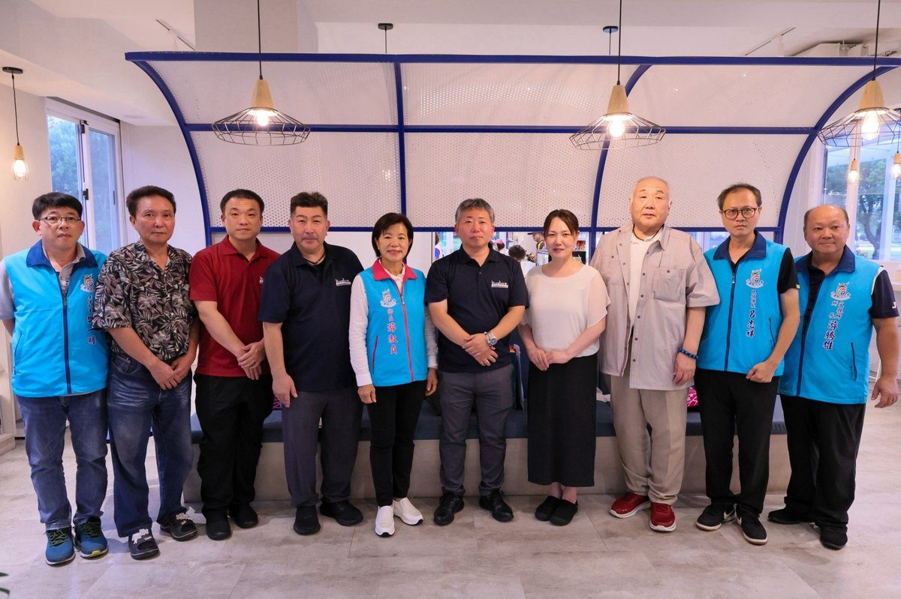

北海道釧路市議員訪吉安 深化臺日友好交流

可樂電子報小編/編輯
11月3日下午，日本北海道釧路市議員訪團造訪花蓮縣吉安鄉，透過走訪在地農場與吉安鄉農會，認識地方農業發展、特色產業與農村文化。吉安鄉長游淑貞率公所團隊熱情接待，準備在地農特產品與文化觀光簡介，展現吉安好客精神；訪團5人中包含釧路市議員4人與1位同行友人，途經吉安時主動與公所聯繫，表達重視友好情誼。

來訪貴賓包括釧路市議員大越拓也、宮田団、板谷昌慶、木村勇太，以及同行友人赤田昌也等5人。一行人走訪花蓮各地農場及農會，瞭解地方農業特色與產業發展；途經吉安鄉時，特別主動與鄉公所聯繫，希望藉此表達對雙方友好情誼的重視。游淑貞特別安排接待，讓訪賓感受吉安豐富農業資源與地方文化魅力，也加深雙方對臺日地方交流的共同期待。

游淑貞表示，國際交流不一定需要隆重正式儀式，有時一場溫暖的相遇、一份真誠的分享，更能拉近彼此距離。公所團隊也藉此機會介紹吉安地方特色、農業發展及觀光資源，讓國際友人看見吉安美好，進一步促進雙城互訪與交流，也為未來深化友好交流奠定基礎。這也讓吉安的農業、觀光與文化資源，成為臺日地方交流的重要橋樑。
接待期間，游淑貞代表公所致贈客家特色紀念杯組、觀光摺頁及當季鄉刊，傳遞吉安深厚文化底蘊與地方人文風情。訪賓也前往吉安鄉農會「山海正甜」吉製冰所，品嚐以芋頭等在地農產精心製作的特色甜品，並透過農會產品介紹與食農文化分享，讓日本友人從味蕾體驗吉安農業的豐富成果，感受地方產業熱情與魅力，也體驗吉安農產加值與食農教育成果。

游淑貞強調吉安鄉持續秉持開放、友善態度推動國際交流，自112年與日本釧路町締結友好交流協定以來，雙方在教育、文化、觀光及經濟等領域持續互動。此次釧路市議員好友雖因行程緊湊僅能短暫停留，仍特別安排到訪，充分展現雙方珍視友誼的心意。友好交流協定也讓雙方城市關係更有延續性，為後續互訪與合作鋪路。

吉安鄉自112年與日本釧路町締結友好交流協定以來，雙方在教育、文化、觀光及經濟等領域持續互動；此次到訪的議員則來自相鄰的釧路市議會，兩地同屬北海道釧路地區。游淑貞指出，未來吉安鄉將持續深化臺日地方交流，讓農業特色、文化底蘊與熱情好客成為連結國際的友誼橋梁，攜手開創更多城市交流與合作契機。這也代表吉安將以在地產業與文化優勢，持續拓展國際友好交流的深度與廣度。

📸 更多現場紀實影像


▶ 延伸觀看
📺 相關報導影片：點此於 YouTube 觀看完整報導
🌟 掌握花蓮在地第一手資訊・歡迎訂閱追蹤
深度紀實報導、在地精采影音專題，第一時間接收最新消息！